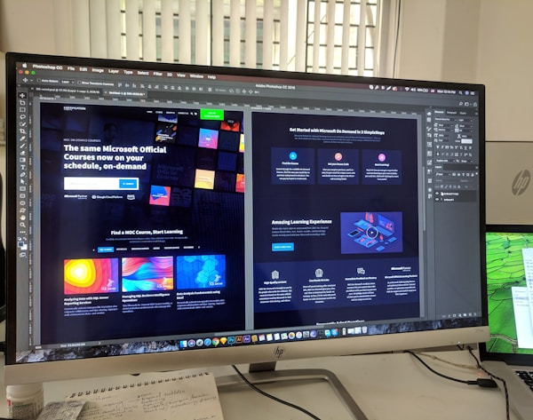
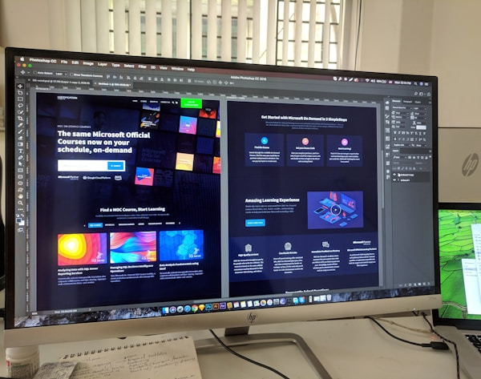

Welcome to Ratanda GreenRoots Community Garden
Ratanda GreenRoots is a community-based non-profit organisation focused on improving the lives of residents through urban gardening projects, recycling initiatives, and youth development programmes in Ratanda Township, Gauteng.
Our vision is to build a greener Ratanda Township with active community participation.
Join Our Mission: Volunteer or Donate Today!Gallery
 

Our Core Focus
We empower community members through gardening, recycling, and focused youth programs. Our goal is to expand garden sites, involve more youth, and build small micro-businesses around fresh produce.